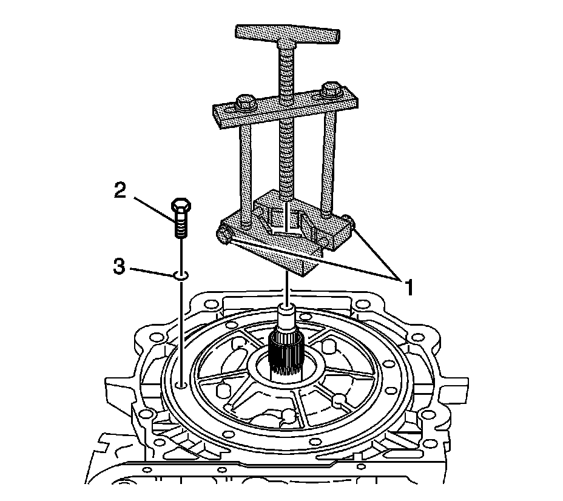
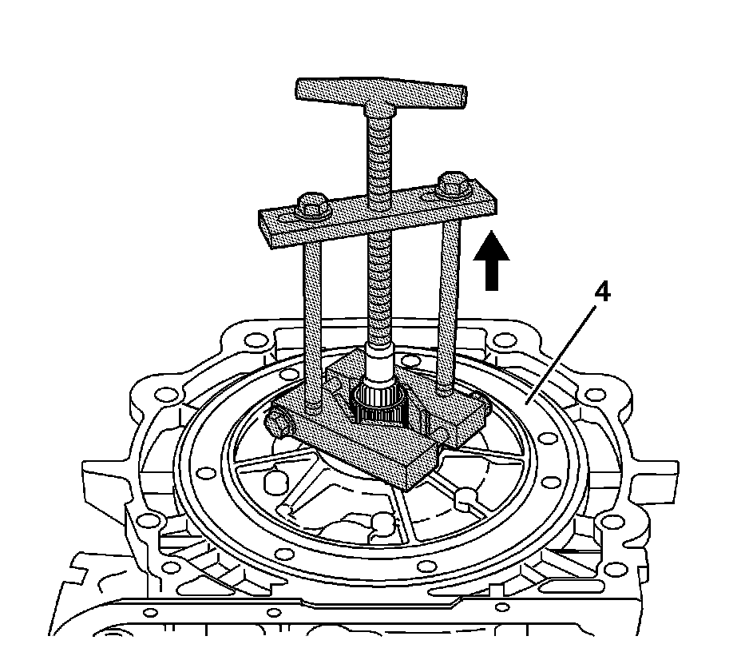
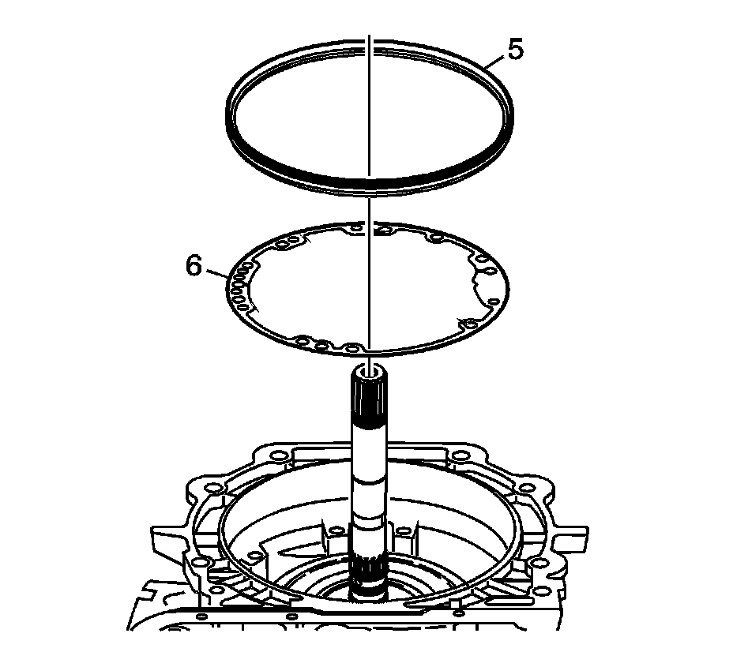

Oil Pump Removal
Oil Pump Removal
Tools Required
J 45053 Universal Clamp Press

1. Remove all pump bolts (2) and pump bolt seal (3).
2. Install J 45053 over stator shaft. Tighten the clamp bolts (1).
3. To prevent slipping, securely fasten the J 45053 around the stator shaft by tightening the bolts (1) with a wrench.

4. Turn the T-handle of the J 45053 to pull the pump assembly (4) from the case.
5. Lift the pump (4) out of the case.

6. Remove the fluid pump seal (5).
7. Remove the pump cover to case gasket (6).